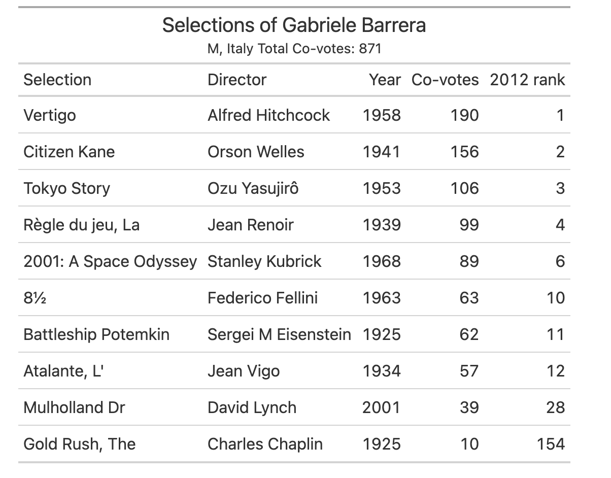
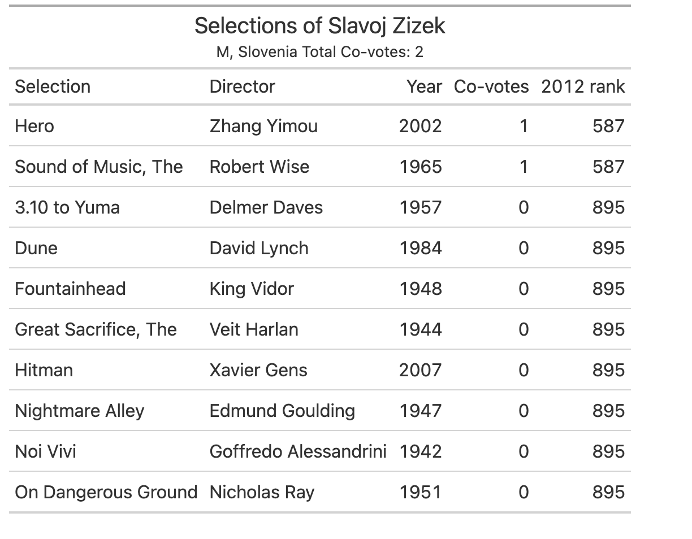
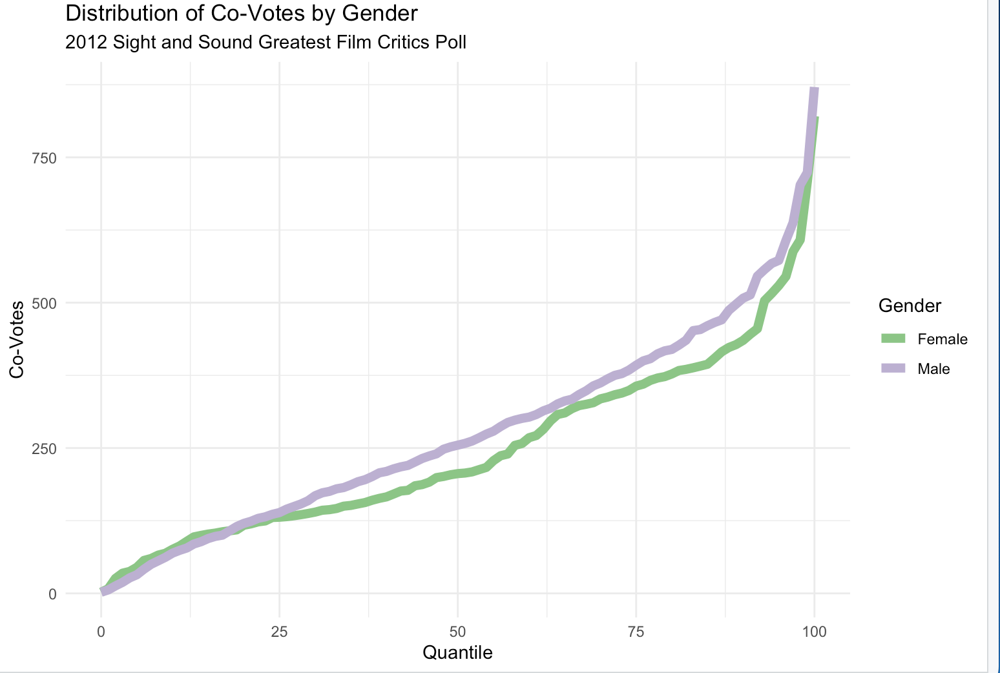

Sight and Sound Voting Strategerie
Are there any meaningful connections between clusters of voters and the clusters of movies they choose? Aside from speculating about the canon, which kind of voters actually support it? If voters worry about rivalries between the top movies, do they adjust their lists to support the rivals even if they would rather endorse their one-off choices that aren’t in the discussion?
My sense is that voters in 2012 voters knew that Vertigo might displace Citizen Kane and may have wanted to add something to that contest, especially if they wanted to see Citizen Kane displaced. In a sense, an idiosyncratic vote is a wasted vote for anyone who wanted to dislodge Kane. But that’s just one possibility, and because the ballots are published, the incentive to vote strategically might be diminished.
Over time, I’ll dig into these questions, with more vigor once the 2022 ballots are available. In the meantime, we might ask whether men or women are more likely to vote with the crowd or endorse movies that we might consider part of the traditional canon. The usual suspects from the 2002 top 10 were Citizen Kane, Vertigo, Tokyo Story, 2001, Rules of the Game, Potemkin, Sunrise, 8 1/2, Singin’ in the Rain, and the Godfathers I and II (combined in that year’s voting). Sight and Sound emphasized that Vertigo would have surpassed Kane with six more votes, albeit from a pool of only 145 voters.
https://www.bfi.org.uk/sight-and-sound/polls/greatest-films-all-time/2002
https://thependragonsociety.com/sight-sound-top-ten-directors-poll-2002/
https://www.newyorker.com/culture/the-front-row/the-sight-and-sound-greatest-films-poll-presents-a-bolder-vision-of-world-cinema
Co-Votes: How Much Do Critics Vote the Same Way?
Since most of the movies were an idiosyncratic choice of one critic, let’s ask: how many critics chose movies outside the canon? Does that tendency depend on gender? And if we change the gender composition, does that change the canon?
When studying voter network we look for connections between voters that might reveal clustering and shared intent. The first place to find a connection is shared vote for the same movie. The lists are unranked and we can’t say how much voters admire a shared movie, but we can see the sharing.
Your vote for Vertigo is shared by 190 other critics. If you voted for Pink Flamingoes, your vote is shared with 1 other critic, and if you voted for Behind the Green Door, your vote was shared with no one. As noted else where, 1125 of the 2019 titles were chosen by just one critic.
How many of a critics votes were shared with other critics?
Suppose you chose the top 10, perfectly, and your 10 choices reflected the sum of the highest vote getters. In 2012, that amount was 1,013. Subtract your own votes, and your ballot would have generated 1,013 co-votes, the hypothetical maximum.
What if your ballot was entirely drawn from the pool of 1,125 films with only one vote? Your co-votes would be zero.
A lot of co-votes reflects a ballot more aligned with the most popular choices. Few co-votes reflects more idiosyncrasy.
The Most Co-Votes: Gabriele Barrera
The co-vote champion was Italian critic, journalist, and teacher Gabriele Barrera, with 871 co-votes.
Notice that only six of his 10 choices finished in the overall top 10 ranking.

The Ballot of Slavoj Zizek
Of the three ballots1 with the fewest co-votes (just 2) came from renowned Slovenian phiosopher and culture critic Slavoj Žižek. 2
Professor Žižek’s 2012 list is:

A remarkable list because it shows that some highly regarded or famous films don’t generate a lot of votes in this format.
The Distribution of Co-Votes by Gender
So what does the distribution of co-votes across critics look like, and does the distribution vary by gender?
The median of male vs. female critics is striking: 255 for men, and only 206 for women. The difference exceed twice the standard error of 17.8.
In general, men are more likely to vote for more popular movies, whereas women seem more likely to choose idiosyncratically, or support movies that differ from the critical mass of support by men.

Citizen Kane vs. Vertigo
One kind of strategic voting might have been to select Vertigo while foregoing Citizen Kane. Among the 846 critics, did voters choose neither, one, or both? Is the number who chose both unexpectedly small or large?
Notice, first and foremost, that most of the critics chose neither: 547 of them, or 64.8%. Almost 2/3 of critics chose neither film in their top 10.
| All Critics | Didn’t Choose Kane | Chose Kane | Total |
|---|---|---|---|
| Didn’t Choose Vertigo | 547 | 108 | 655 |
| Chose Vertigo | 142 | 49 | 191 |
| Total | 689 | 157 | 846 |
Chi-sq: 7.62. p:.006
But was a vote for Vertigo independent of a vote for Kane, and vice versa? For both men and women?
We would expect a number lower than 49 if voters are choosing them independently. In this case, it looks like people who choose Kane are more likely to choose Vertigo than other voters, and vice versa.
| Male Critics | Didn’t Choose Kane | Chose Kane | Total |
|---|---|---|---|
| Didn’t Choose Vertigo | 402 | 88 | 490 |
| Chose Vertigo | 110 | 43 | 153 |
| Total | 512 | 131 | 643 |
Chi-sq: 6.78 p: .01
| Female Critics | Didn’t Choose Kane | Chose Kane | Total |
|---|---|---|---|
| Didn’t Choose Vertigo | 142 | 20 | 162 |
| Chose Vertigo | 31 | 6 | 37 |
| Total | 173 | 26 | 199 |
Chi-sq: 0.13 p: .72
| Unknown Gender Critics | Didn’t Choose Kane | Chose Kane | Total |
|---|---|---|---|
| Didn’t Choose Vertigo | 3 | - | 3 |
| Chose Vertigo | 1 | - | 1 |
| Total | 4 | - | 4 |
The important point in all of these matrix, aside from the number who didn’t choose either film, is that men seem more likely to pair their votes for Kane and Vertigo than women. We can also see that women were simply less likely to choose Kane (26/199, or 13.1, vs. 131/643, or 20.4% for men). Women were somewhat less likely to choose Vertigo (37/199, or 18.6%, vs. 153/643, or 23.8% for men).
This difference gives one kind of clue about voter characteristics in the 2022 voting. Style may account for a gender effect as much as theme or topic. Stay tuned.
Footnotes
The other two ballots with only two co-votes came from Ferroni Brigade and Olaf Möller↩︎
Professor Žižek’s extensive work is widely available online, and example from the December 19 Guardian is available here (“Why Be Happy When You Can Be Interesting?”). Indeed.↩︎